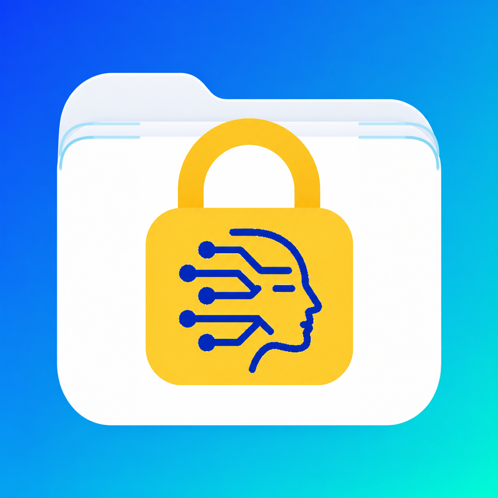

Organize
Items and reminders
Save notes, categories, and important dates. Add local reminders and see an active-item category pie on Home and detailed reminders and dates on Dashboard.

VaultItem · iPhone & iPad
Private by design · Core features work offline.
Face ID or your device passcode protects the app at launch and when you return. Sensitive Vault records are encrypted on-device. No automatic cloud uploads by VaultItem.
Keep receipts, documents, important dates, and reminders together. Scan what you need, share or print supported previews without saving, or save it with an Item to find again.
VaultItem 1.2 · iPhone & iPad
VaultItem 1.2 is being prepared with refreshed branding, an app unlock layer, and flexible Capture previews. The App Store link opens the version currently available.
VaultItem asks for Face ID or your device passcode when the app opens and when you return after leaving it, including after opening an external page. The Private Secure Vault continues to require its own authentication.
Open Ask VaultItem from Home. Type a question, tap a sample, or tap Voice to dictate directly into the question box. Speak now indicates microphone capture; tap Stop to keep the transcript for review. Voice adds words after any existing question. Review or edit the text, then tap Ask. Cancel Voice restores the pre-dictation question. The 500-character question limit still applies; voice never submits automatically. Leaving the screen stops its voice session.
Read supported documents on device, review proposed details, and select what to save. Secure Documents uses a separate authenticated review and encrypted selected-field storage.
Home shows Private by design · Works offline near the top. Tap its arrow for privacy and connectivity details. The four compact Vault, Capture, Voice and Form buttons open their actions directly. Ask VaultItem appears in a subtly tinted row with bold accent text. The What would you like to do today? guidance starts collapsed. Text follows system text-size preferences; spacing and safe areas adapt to the available window, including folded and open Duo displays.
Dashboard at a Glance! shows active ordinary items by category, plus a yellow Vault Secure Documents total when available. Passwords, secure notes/codes, private names and document contents are not exposed in the graph. The graph grows or shrinks with available space and its Legends control scales proportionally. Tap Legends for category colors and counts; its extra caption is omitted on compact layouts. An empty-state message replaces a zero-data graph. Past reminders, upcoming reminders and expired items use compact adjoining rows. Tap a row to review its items; secure reminders open the Vault. Larger text may require scrolling.
Organize
Save notes, categories, and important dates. Add local reminders and see an active-item category pie on Home and detailed reminders and dates on Dashboard.
Capture
Scan multiple pages into a PDF, take a photo, or choose a file or image. Share or print supported previews without saving an Item, or keep them with an Item.
Find
Recognize text in images and scans, extract embedded PDF text, and search your Items, file names, and saved text. Matching words are highlighted; short searches match whole words.
Save
Capture codes and store their values alongside an Item for later reference.
Use
Open supported images, text files, and PDFs. Share or print supported Capture previews without saving an Item. Saved attachments and extracted text also offer Share and Print.
Keep local
Your records live in the app’s private storage. Core features work offline, without a sign-up step.
Home has four responsive square icon buttons: Vault, Capture, Voice, and Form. Each opens its action directly. The welcome card starts collapsed. Press and hold for help on iPhone; hover for help on iPad. The buttons use the app icon’s blue-to-cyan gradient with bold labels. The Home pie shows every active ordinary-item category, including one-item categories; tap Legends for colors and exact counts. The highlighted reminder alert separates Past and Upcoming counts and lists expired items separately.
Browse categories in My Stuff, carry a selected category into Add, and find your way back without losing your place. See highlighted matching words in Search and select an attachment or code in Item Details to use one shared action area. Private Secure Vault brings passwords, secure documents, notes/codes, and other secure records into separate compact sections. Unlock with Face ID, Touch ID where supported, or your device passcode. Vault items stay outside ordinary Search, Ask VaultItem lookups, and ordinary item backups. Only a Secure Documents aggregate appears in the Home graph. Comfortable layouts, five color palettes, Light and Dark appearance, and larger text support make the app easier to read on iPhone and iPad.
Keep typed notes, reviewed Voice Input, and a photo, scan, file, or code together in one Add draft. The header Save creates one record. Choose an item type and its matching alphabetical categories; suggested notes help you fill only what matters.
Expand grouped details when needed. Summaries distinguish saved content from empty sections. Set date-linked or independent reminders, edit existing alerts, or use Cancel Reminder when an alert is no longer needed. Archive records for later, restore them with confirmation, or permanently delete selected archived items after making a verified backup.
Capture has three square icon buttons under Camera Inputs and two under File Inputs. Tap a method to open it directly. Press and hold for help on iPhone or hover on iPad; general preview guidance stays below the buttons. The five methods let you scan paper pages into a PDF, take a photo, save a QR/barcode value, import a file, or reuse a library image. In Item Details, Add Code opens the scanner directly. Attachment cards keep View, Delete, and Extract Text together; Capture Preview offers Share and Print for supported files without saving an Item. Saved attachments keep Share and Print inside View, and Full Text opens recognized text.
Read the updated user guide or browse frequently asked questions.
App Store artwork
Current VaultItem product-page Header and Search Results artwork, updated for the app lock, encrypted on-device Vault, and no automatic cloud uploads.


Inside the app
Current Home screenshots from the VaultItem 1.2 media set.


Inside Private Secure Vault
Keep documents, passwords, secure notes and codes, and other private records in separate Vault sections. The app asks for Face ID or the device passcode when it opens and when you return after leaving it. Opening the Private Secure Vault requires its own authentication. Vault Backup & Restore creates an encrypted portable backup; restoring requires the matching recovery key and device authentication. Keep the key separately. Ordinary Settings backups exclude Vault data.
View the Private Vault preview to see the current on-device workflow.
Across screen sizes
The Duo Home screenshot above uses the unfolded display layout. App Store preview videos use Apple’s standard iPhone preview dimensions.
See the workflows
Review a document, share or print without saving, or add it to an item.
Keep sensitive documents in a separate, authenticated on-device Vault.
Browse and manage everyday records in My Stuff.
These silent iPhone previews are from the VaultItem 1.2 App Store media set. Capture shows a sample document and its review actions; it does not perform a live camera scan or save an item. All displayed records are fictional.
A simple routine
Give a receipt, household record, or important document a place with a title and notes.
Attach a document, scan a page or code, and set a reminder for an important date.
Browse My Stuff, check Dashboard, or search for information from saved documents.
Your information
Saved records stay on your device. VaultItem does not automatically upload them to its servers or an AI provider. Use the Vault for passwords and sensitive documents: passwords use the protected iOS Keychain, and other Vault records and attachments are encrypted locally with a device-only key. VaultItem asks for Face ID or your device passcode at launch and when you return after leaving the app, including from an external page. The Private Secure Vault has its own separate unlock. This app-level lock controls access to app screens; ordinary items do not have the Vault’s additional encryption. Vault contents are excluded from ordinary Search and Ask VaultItem.
Core features work without an internet connection, including Airplane Mode with Wi-Fi turned off: create, edit and view local records, use the Vault, search ordinary saved items, scan documents, read supported document text on device, and use built-in Ask VaultItem guidance and local lookups. Download cloud-only files before disconnecting. Web links, cloud file access and online sharing need a connection. Supported on-device voice recognition depends on the device and language; there is no cloud-recognition fallback.
Sharing, printing and exported backups can create copies outside the app; device backup settings may also send app data to iCloud or a computer. Protect your device and keep the encrypted Vault recovery key separate from its backup. No app can guarantee protection from identity theft.
VaultItem for iPhone & iPad
Keep documents, notes, dates, and private essentials together.
View on the App Store. Check the listing for the version currently available.
View on theApp StoreCheck for updates on the App Store. Explore the user guide, find support, or contact us.
Open Capture and choose Scan Document, Take Photo, Choose File, or Photo Library. Preview the result, then Share or Print supported formats without creating an item. Canceling a share or print sheet returns to Preview. Choose Use in this item or Save options to keep it with an item, then explicitly Save. Done → Finish leaves without saving; original files, external copies, and existing draft notes are kept. QR/barcode previews use their separate item-saving flow and never open links automatically.
Manage protected passwords, documents, and notes on your personal iPhone or iPad. VaultItem stores Vault information locally and does not upload it to the cloud or its servers. Device authentication protects access. Sharing documents or explicitly exporting a backup can create copies in a destination you choose, including a cloud file provider. Only the aggregate Secure Documents count appears in the Home chart; private names and contents stay inside the Vault.
Read the current workflow guide or FAQs for Vault transfers, themes, Ask guidance, and Dashboard counts.